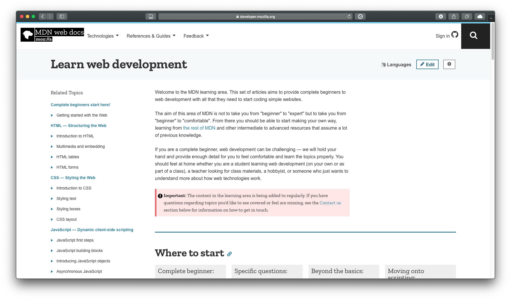
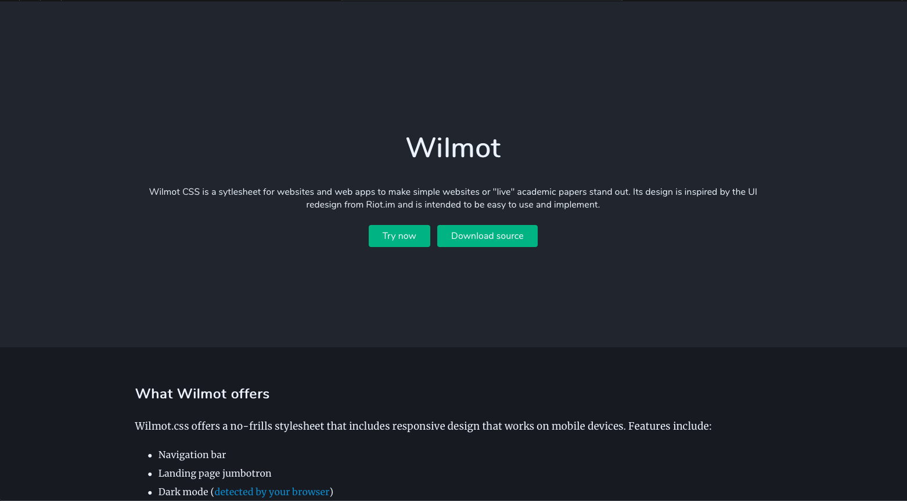

Writing a Site with Wilmot
Wilmot.css has been designed to make it easier to write your website without needing to apply classes everywhere so that developers and readers can focus on making their site, blog post, or paper without needing to worry too much about styling. It is also intended as an easy styesheet to use for those learning the basics of HTML, CSS, and JavaScript.
If you are new to creating websites, I recommend checking out the guides and tutorials from Mozilla Developer Network. They offer a great start and will help you get the hang of creating your own sites, as well as understanding how Wilmot works to make your site look good.
See also: Learn web development (Mozilla Developer Network)
The Mozilla Developer Network is a site maitained by Mozilla, the company that makes Firefox, that aims to be a central source for learning how to code your own websites.
Creating a navigation bar
The navigation bar (navbar) is one of the major components of any website using Wilmot. It usually contains links to other parts of a site and displays the site's title.
To create a navbar in Wilmot, we make use of the nav element, responsible for creating navigation sections in HTML. While it is possible to use the appropriate classes in other elements, I recommend using the nav element to keep things clean.
<nav class="navbar">
<div class="navbar-flex">
<div class="title">
<a href="/index.html">Wilmot</a>
</div>
<div class="mobileMenuButton" onclick="toggleMobileMenu()">More</div>
<div id="mobile-menu" class="mobileMenu">
<ul class="links">
<li class="link"><a href="/index.html">Home</a></li>
<li class="link"><a href="/docs.html">Docs</a></li>
<li class="link"><a href="https://github.com/alicerunsonfedora/wilmotcss">GitHub</a></li>
</ul>
</div>
</div>
</nav>
Creating a jumbotron
The jumbotron is a huge section of a website that introduces a topic or requires attention. In Wilmot, the jumbotron consists of a title and content (buttons that link elsewhere are optional).

The jumbotron on the main Wilmot site
Defining a jumbotron inside of Wilmot is extremely easy and can be done inside of the body of your HTML:
<div class="jumbotron">
<h1 class="title">...</h1>
<p class="content">...</p>
<div class="buttons">
...
</div>
</div>
Keep in mind that you should only have one jumbotron per page so that your readers and viewers aren't bombarded with information.
Adding your site's content
Writing content is relatively straightforward in Wilmot and shouldn't be style-filled like the other components. Rather, most styles will be inherited from the main content.
I recommend using the article element to hold your main content so that Reader Mode will work correctly on your site without difficulty. However, you can use any element you'd like to contain your site's content.
To apply the content style, use the paper class on your containing element:
<article class="paper">
...
</article>
Building up your site from here should be straightforward, but keep the following in mind:
- Sections of your paper should be stored in the
sectionelement to continue applying styles. - Images will take up 100% width of the paper container.
- To add a caption to go with an image, apply the
captionclass. - Both the
preandblockquoteelements have styles to stand out from most content. Don't be afraid to use them when necessary! - The overall website makes use of both light and dark mode, so make sure your site can work with both variants of Wilmot.css
Adding buttons
To make a button in Wilmot, just apply the button class to your element. I recommend using this with links when needed:
<a href="..." class="button">Click me</a>
If you want your buttons to be in the center of the page, create a container for them with the buttons class:
<div class="buttons">...</div>
If you want the buttons to take up the same width as an image, add the fullwidth class to both the button container and the buttons.
Academic sources
If you are using Wilmot to present an academic paper, there are classes you can use to format your bibliography so that it uses the hanging indent. Doing this is very similar to how links in the navbar are handled:
<section class="sources">
<p class="source">...</p>
<p class="source">...</p>
<p class="source">...</p>
</section>
Hodgson, Matthew. 2019. “Matrix in the French State.” presented at the FOSSDEM, ULB Solbosch Campus, February 2. https://fosdem.org/2019/schedule/event/matrix_french_state/.
See also content
For papers or sites that want to direct readers' attentions to external content when necessary, Wilmot comes with a "see-also" section.
<section class="see-also">
<h3 class="title">See also: Learn web development (Mozilla Developer Network)</h3>
<img src="./site/mozilla.png" alt="The lwarn web development page from MDN"/>
<p class="caption">The Mozilla Developer Network is a site maitained by Mozilla, the company that makes Firefox, that aims to be a central source for learning how to code your own websites.</p>
<div class="buttons">
<a href="https://developer.mozilla.org/en-US/docs/Learn" rel="noopener nofollower noreferrer" class="button">Visit now</a>
</div>
</section>
Where to go for help
If you need help with using Wilmot.css, feel free to take a look at this documentation page on GitHub or file an issue.
If all else fails, feel free to email me.